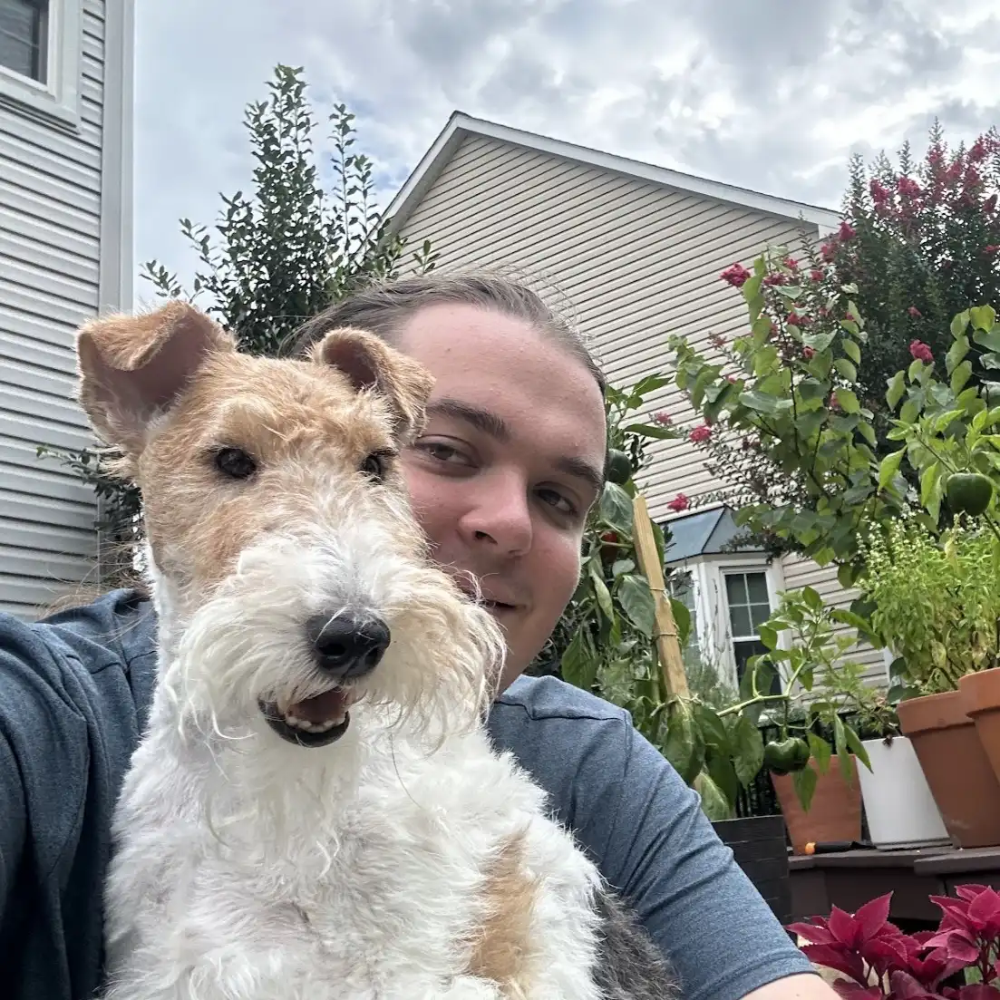

About Me
Hi, I'm Isaac Sherwood, a Physics major at the University of Maryland College Park! My primary research interest is in solid state physics and quantum materials. Here is my
resume. This is me:

Current Projects
- I am working in Professor Mohammad Hafezi's lab, studyingthe effect of nanopatterning on the superconducting properties of aluminum and niobium.
- I recently finished participating in the 2026 Summer Student Theoretical Physics Research Session with professor Sylvester James Gates, and am continuing work with him and a group of students on research in supersymmetry.
We are researching the dimensional reduction of four-dimensional N = 1 supersymmetric algebras and their representations in three-dimensional space time.
- I am also working in Professor Ichiro Takeuchi's lab, researching unconventional superconductors and superconducting devices. My current project involves fabrication of Indium and Bismuth Palladium spin injection devices.
Fun stuff about me
- I am currently the president of the UMD chapter of the Society of Physics Students, and I used to be the Outreach Chair.
- I am involved with lots of physics outreach at UMD, and have helped organize and run events like Physics is Phun, Discovery Days, and other public events at UMD.
- I spent the summer of 2025 in Boudha, Nepal, studying at Ka Nying Shedrub Ling Monastery.